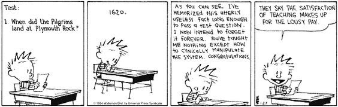
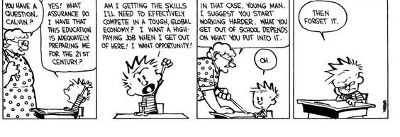
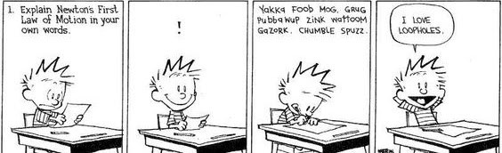

University of Utah (Faculty)
- Causal Inference (Spring, 2027) (Ph.D. level class, coming up)
- PHS 7040 - Statistical Machine Learning (Spring, 2026) (Ph.D. level class; I designed it and was the sole course director) syllabus course evaluations <3
University of Michigan (Instructor)
- AI in Science and Engineering Summer Academy (Summer, 2023) (designed for faculty, post docs and researchers)
Professor for the Causal Inference module
University of Michigan (Graduate Student Instructor)
2016-2022
Accomplishments:
- Nominated by the Dpt. of Economics to the university-wide Outstanding Graduate Student Instructor Award 2021
- Click here for some excellent quotes that I was honored to get regarding my teaching activities
- Teaching evaluations: aggregated results and links to the actual evaluations with comments from students are in the table below
| Level | My median evaluation | University's median evaluation | % Respondents | Class | Term | Link to evals |
|---|---|---|---|---|---|---|
| Masters | 4.80 | 4.61 | 59% | ECON500 - Quantitative Methods | Fall 2018 | eval |
| Masters | 4.87 | 4.64 | 70% | ECON503 - Econometrics I | Fall 2019 | eval1 / eval2 |
| Ph.D. | 4.99 | 4.65 | 89% | ECON671 / STATS510 - Mathematical Statistics | Winter 2020 | eval |
| Undergrad | 4.79 | 4.72 | 29% | ECON251 - Intro to Stats and Econometrics II | Spring 2020 | eval1 / eval2 |
| Masters | 4.93 | 4.69 | 78% | ECON503 - Econometrics I | Fall 2020 | eval1 / eval2 |
| Masters | 4.91 | 4.77 | 51% | ECON504 - Econometrics II | Winter 2022 | eval1 / eval2 |
Full list of classes for which I was the Graduate Student Instructor:
- ECON671/STATS510 - Mathematical Statistics: Ph.D. level | Prof. Ya'acov Ritov (1 term)
- ECON503 - Probability and Mathematical Statistics: Master in Economics | Prof. Asenka Asenova (2 terms)
- ECON504 - Econometrics for Applied Economics: Master in Economics | Prof. Asenka Asenova (1 term)
- ECON500 - Quantitative Methods: Master in Economics | Prof. Chad Hogan (3 terms)
- ECON452 - Intermediate Stats and Econometrics II: Undergrad | Prof. José Diogo Barbosa (1 term)
- ECON251 - Introduction to Stats and Econometrics II: Undergrad | Prof. Asenka Asenova (5 terms)
São Paulo School of Economics (Teaching assistant)
2013-2015
Classes for which I was the Teaching Assistant:
- Econometrics I: Ph.D. and Masters in Economics | Prof. Sergio Firpo
- Econometrics II: Ph.D. and Masters in Economics | Prof. Cristine Pinto
- Mathematics for Economics: Professional Master in Economics | Prof. Ernesto Colla and Prof. Verônica Orellano
- Leveling Mathematics: Professional Master in Economics | Prof. Verônica Orellano
- Linear algebra and optimization: Undergrad in Economics | Prof. Verônica Orellano
Brazilian Ministry of Health (Professor)
2009
I designed and taught a course on using statistical tools for production efficiency estimation: a 60-hour course for 20 health specialists from the Health Secretary. Content: probability, inference, efficiency in microeconomics, Stata, descriptive statistics and data envelopment analysis (DEA).
Santíssima Trindade Church (Volunteering)
2007-2008
I taught Mathematics and English classes for students from underprivileged backgrounds, to improve their performance on the national university entrance examination (Belo Horizonte, Minas Gerais, Brazil).

